LANCEMENT DE LA FORMATION AUX MÉTIERS DU NUMÉRIQUE : LA CNAMGS ACCOMPAGNE LA 1ère PROMOTION DES GEF À L'ECOLE 241
 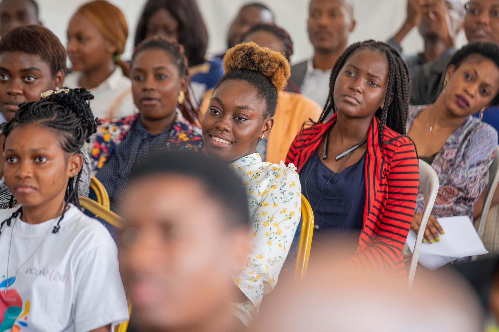
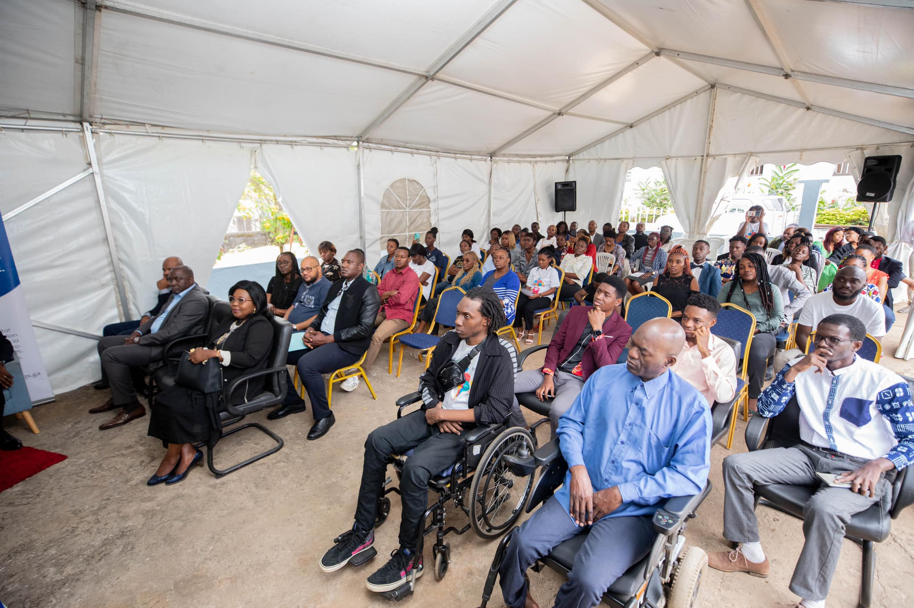
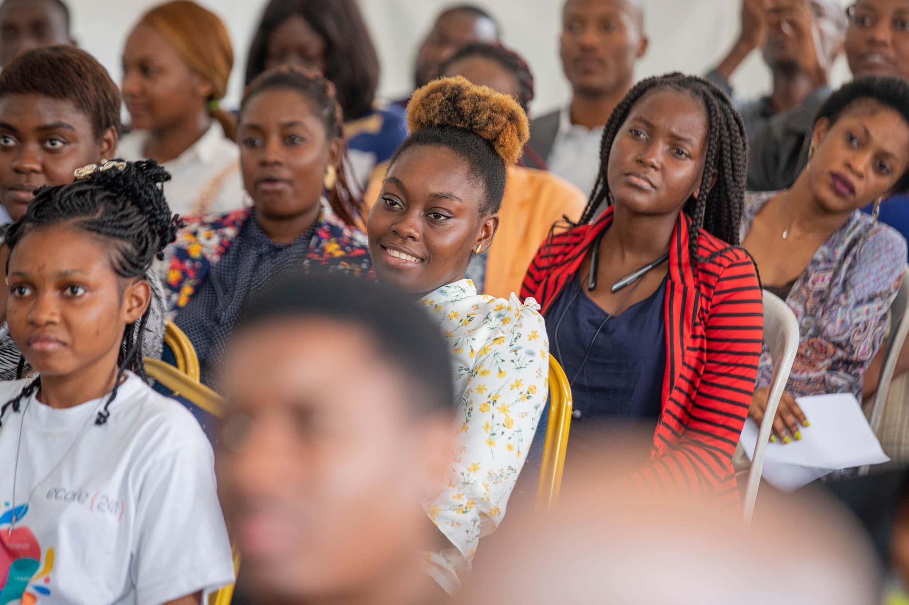
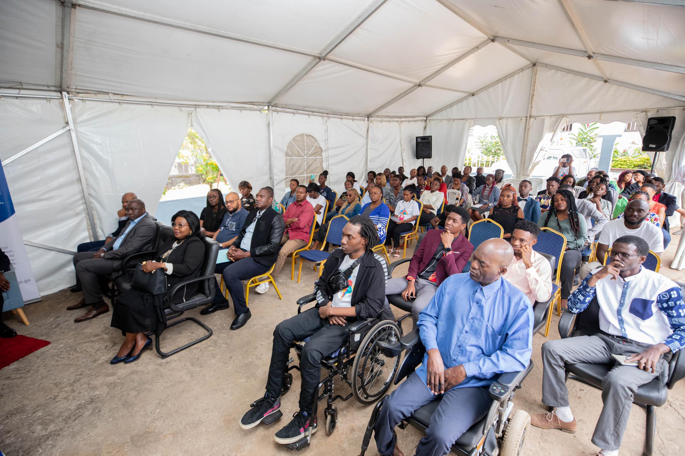
 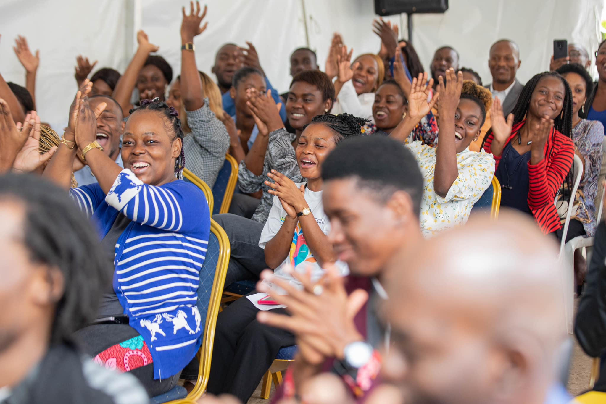
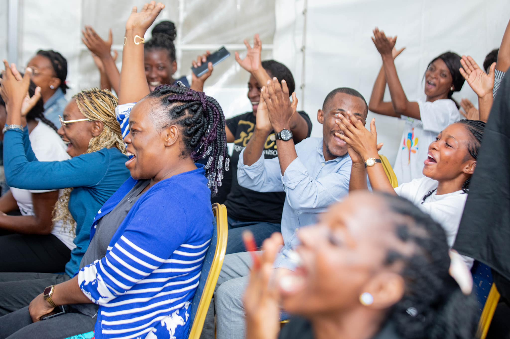
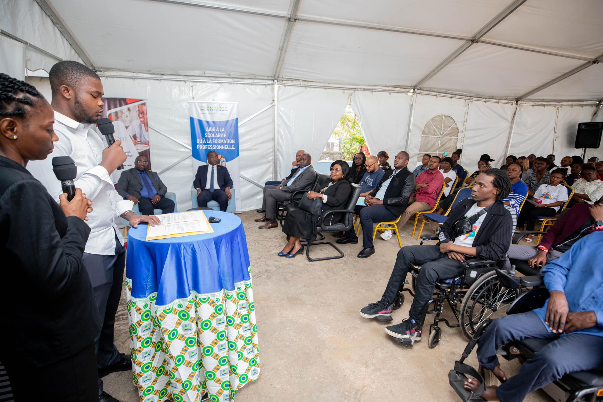
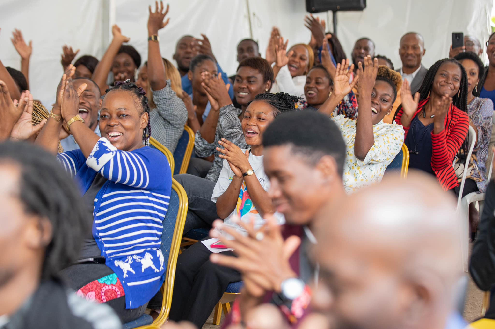
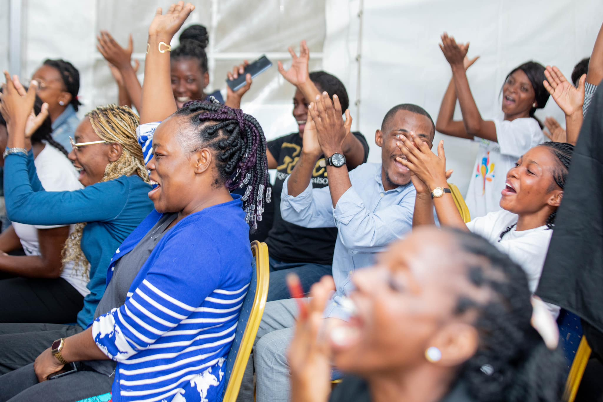
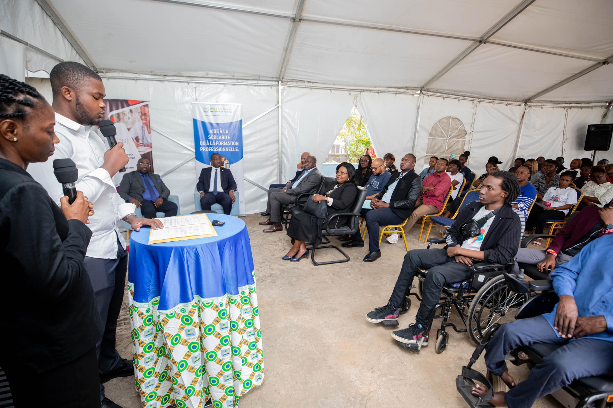
LANCEMENT DE LA FORMATION AUX MÉTIERS DU NUMÉRIQUE : LA CNAMGS ACCOMPAGNE LA 1ère PROMOTION DES GEF À L'ECOLE 241
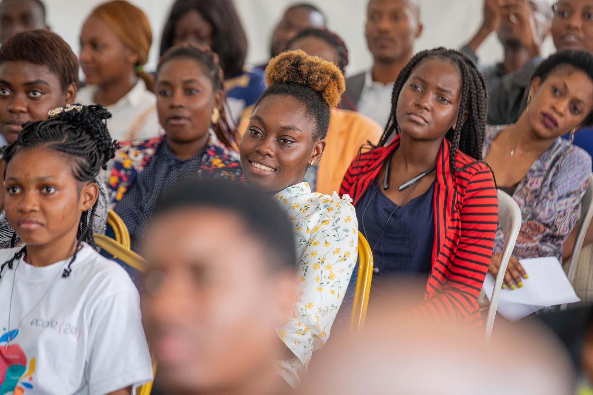
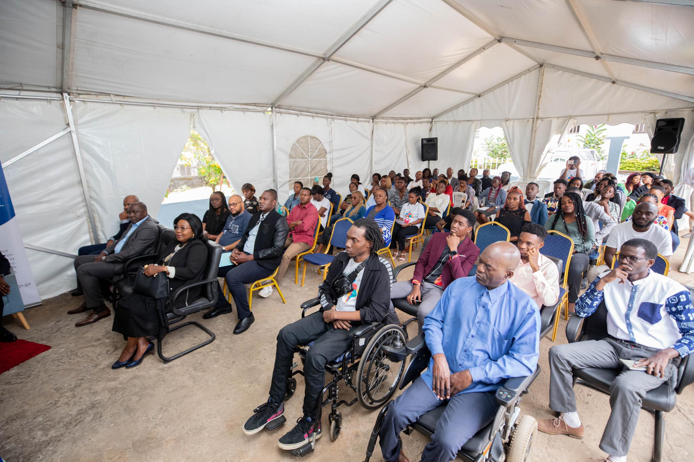
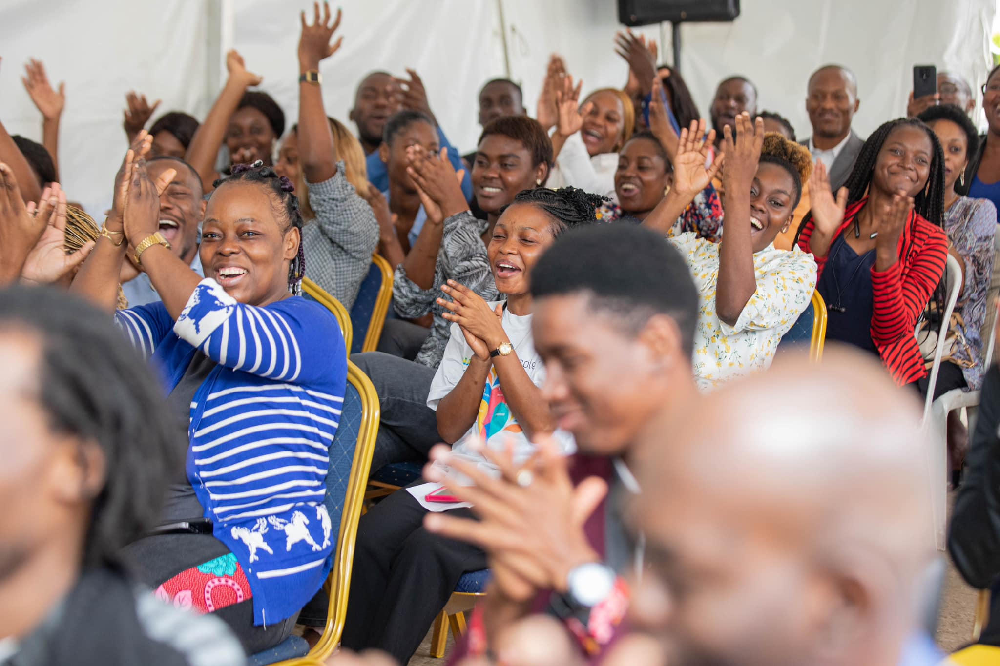
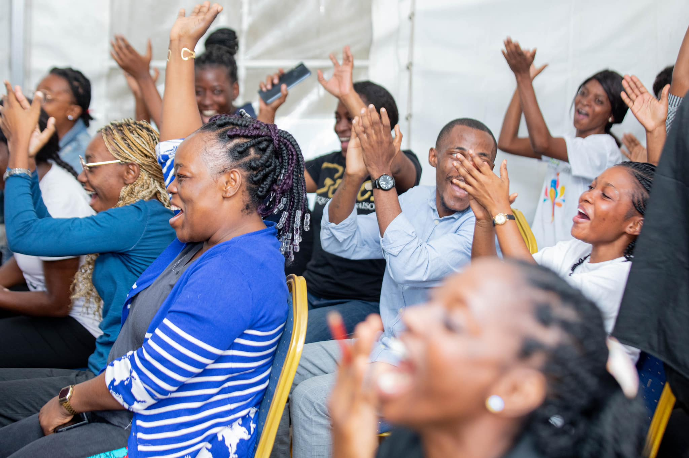
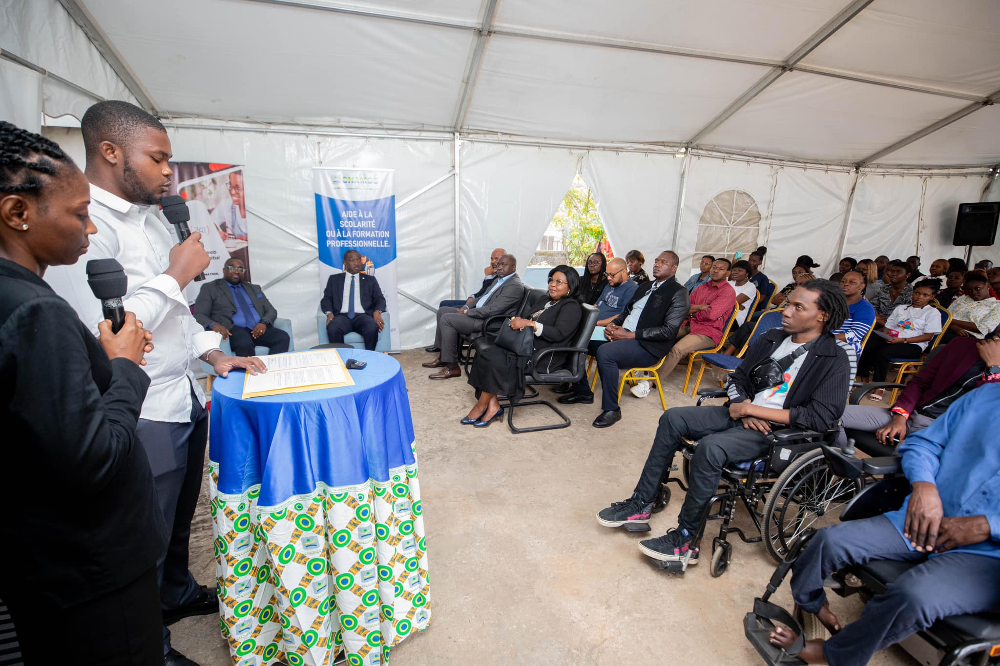
FORMATION AUX METIERS NUMERIQUE : LA CNAMGS OCTROIE UNE SUBVENTION MENSUELLE A LA 5e PROMOTION DE L'ECOLE 241. Lancé au mois d'avril 2023, le projet de formation des jeunes aux métiers du numérique vient de terminer sa phase de sélection de candidats. C’est à la faveur d’une cérémonie conjointe entre la CNAMGS et Ecole 241 que le lancement de la formation a été initié, le vendredi 21 juillet 2023, dans les locaux d’Ogooué Labs. Selon le Directeur Général, la CNAMGS s'inscrit « dans une démarche de digitalisation de ses services. C'est l’une des raisons pour lesquelles nous avons choisi Ogooué Labs, car toutes les personnes passées par cette formation sont aujourd’hui autonomes. Certains sont des salariés, d’autres sont devenus des entrepreneurs. La CNAMGS est disposée à vous accompagner, pendant et après la formation ».
Monsieur Sylvère BOUSSAMBA, Président de l’ONG Ogooué Labs, Fondateur d’Ecole 241, a d’abord situé l’importance du numérique dans le développement d’une société. Pour lui, l’économie numérique « est devenue depuis le début des années 2000, la nouvelle économie qui se superpose à l’économie réelle, elle regorge d’un immense potentiel de développement et d’opportunités pour notre jeunesse et notre pays »
Au sujet du partenariat avec la CNAMGS, Monsieur BOUSSAMBA a indiqué que « s’il y avait une première organisation gabonaise avec laquelle nous rêvions de nous lancer, c’est bien avec la CNAMGS, car les cibles de ses missions cadrent parfaitement avec celles de l’Ecole 241, c’est-à-dire les Gabonais Economiquement Faibles, éloignés de l’emploi et du numérique ». « Nous sommes particulièrement fiers en tant que gabonais, parce que grâce à la CNAMGS, nous lançons ce jour notre première promotion soutenue à 100% par le Gabon ».
L’expérience a montré que les projets de formation au profit des personnes vulnérables peinent à atteindre leurs objectifs en raison des difficultés auxquelles sont confrontés les bénéficiaires.
A l’effet d’avoir une approche holistique, permettant de limiter le décrochage, le Directeur Général s’est engagé à offrir aux 45 apprenants qui constituent la première promotion CNAMGS à l’Ecole 241 :
· une aide financière mensuelle ;
· une opportunité de développer des projets au sein de la CNAMGS prise comme incubateur, leur offrant ainsi une première expérience professionnelle.
Les chiffres clés :
45 GEF bénéficieront de la formation financée à 100% par la CNAMGS, à savoir :br
· 19 mères célibataires de moins de 45 ans ;
· 22 jeunes en difficultés sociales de 16 à 25 ans ;
· 4 personnes vivant avec un handicap (PVH) .